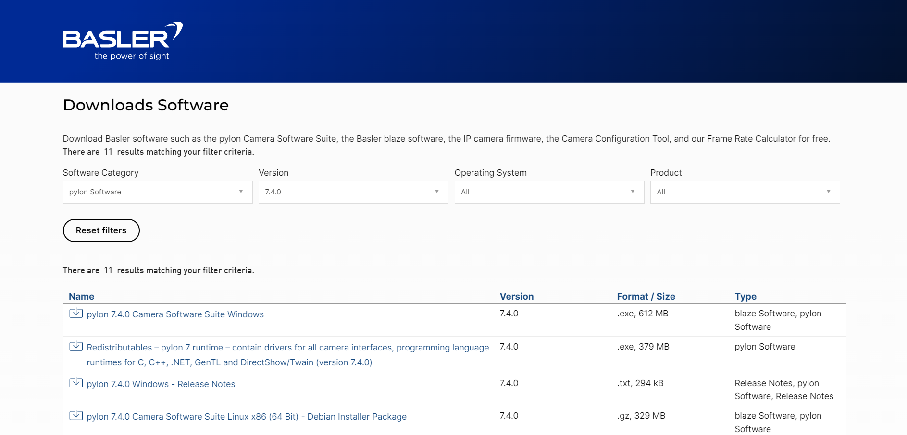
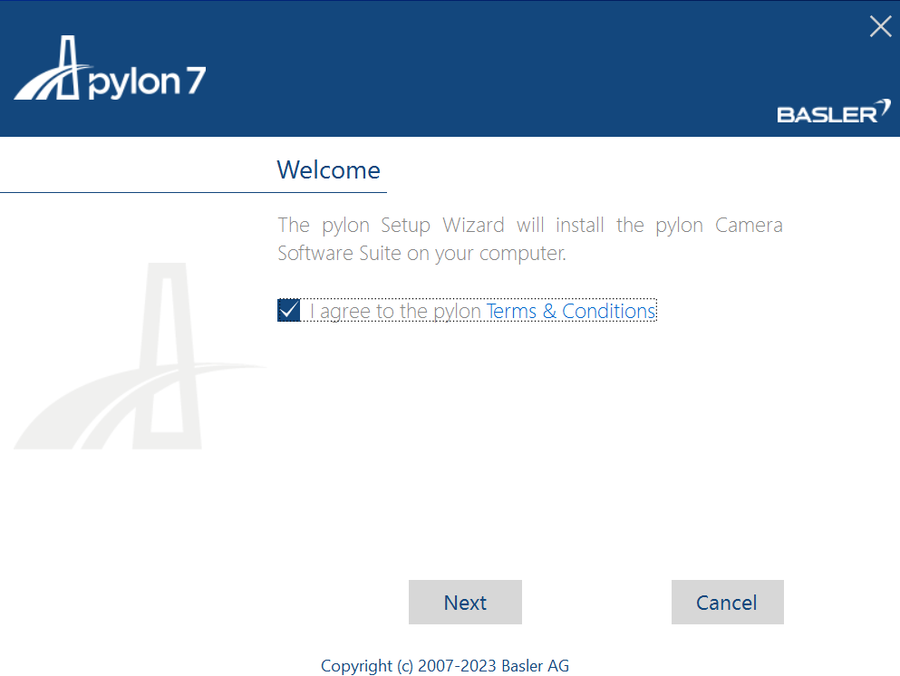
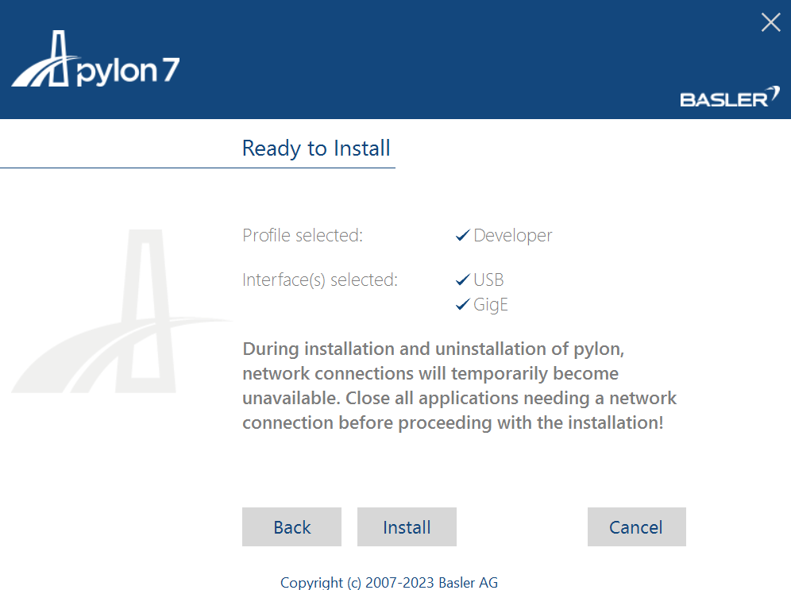
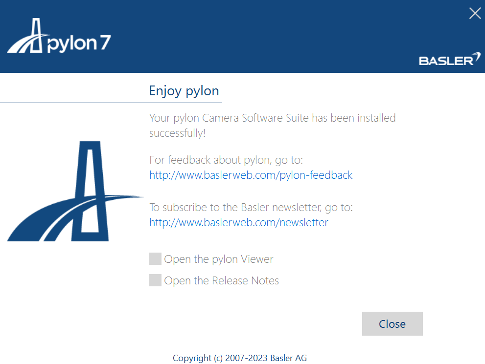
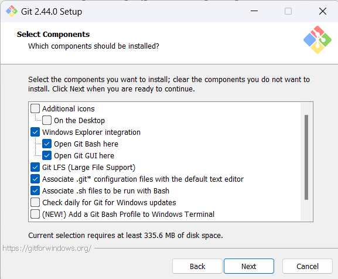

Introduction
This guide provides a comprehensive walkthrough for installing, testing, and conducting ink printing experiments using Aerotech stages. The document outlines the essential software installations necessary for the process and offers a brief overview of each software component.
Installation Overview
A3200 Motion Control Software
Developed by Aerotech, the A3200 software facilitates interaction with motion stages. While the Motion Composer is typically employed, integration with MATLAB or Python scripts is also supported. This guide emphasizes a Python-based approach, highlighting how to utilize the A3200's communication features to interface with the ASCII server and control the stages via the host computer's IP address.
Camera Integration for Feedback
The implementation incorporates vision algorithms utilizing cameras from Basler (Pylon) and Blackfly. These cameras serve as feedback mechanisms, enabling precise line width estimation for controller inputs. Python APIs provided by both camera manufacturers are leveraged to maximize their functionalities.
Anaconda for Python Environment Management
Given that the project is Python-centric, managing different Python package versions is crucial. This guide recommends using Conda environments for this purpose. Conda is highly effective in duplicating a set of dependencies, streamlining the setup process.
Git Bash for Windows Development
The development environment is based on Windows, where native Linux commands are not directly applicable. Git Bash is introduced as a solution to this limitation. This guide includes instructions to configure Conda within Git Bash, addressing the absence of native Conda support.
Source Code and Initial Setup
The software package is hosted on GitHub. Detailed instructions for the initial setup and configuration are provided. While new system installations may encounter missing dependencies, this guide assures easy resolution through pip or Conda, ensuring a smooth environment setup.
A3200
1. Download A3200 software from Aerotech website:

2. Open A3200 Configuration Manager with system specific configuration file:

3. Open A3200 CNC Operator and test stage movements:

Camera
PylonSDK
1. Download Pylon SDK from Basler's website:

2. Select camera suite for windows:

3. Fill in details to download SDK:
4. Download .exe file:

5. Agree to terms and conditions:

6. Select developer profile:
7. Select all the interfaces applicable:

8. Keep the default destination folder:
9. Verify and install Pylon SDK:

10. Wait for installation to complete:

11. Close installer:

12. Once installed open Pylon Viewer to test camera:

Blackfly
Anaconda
1. Download Anaconda Navigator from their website:

2. Agree User License:

3. Select All Users if admin privileges available:

4. Use default installation location:

5. It will take couple of minutes to install:

6. After installation is complete continue to next step:

7. Add Anaconda3 to PATH environment:

8. Finsh Setup:

Git Bash
1. Download Git Bash from Git website:

2. Select 64-bit Git for Windows Setup in Standalone Installer:

Note: Unless specified below keep default settings in installer.
3. Open Git Bash setup tool:

4. Keep default component selection:

5. Change default branch to main instead of master:

6. Complete installation and press Finish:

7. Configure Git Bash to work with Anaconda:
- If Anaconda is installed for current user then navigate to following location, else look for it in the root directory:
\path\Users\{user_name}\AppData\Local\miniconda\etc\profile.d
- Open Git Bash from directory containing profile.d and execute following command:
echo ".${PWD}/conda.sh" >> ~/.bashrc
- If the path contains spaces even in user name then use following command:
echo ". '${PWD}'/conda.sh" >> ~/.bashrc
- Open a new Git Bash terminal and write conda in it to test if its working.
Source Code Setup
1. Download southern_research_deployment zip from Github and extract it to desired location:

2. Open root directory of southern_research_deployment in Git Bash:

3. Create a new conda environment using following command and select y in the prompt:
conda create --prefix envs

4. Activate conda environment and install dependencies:
conda activate ./envs
5. Possible errors:
# sympy not found
pip install sympy